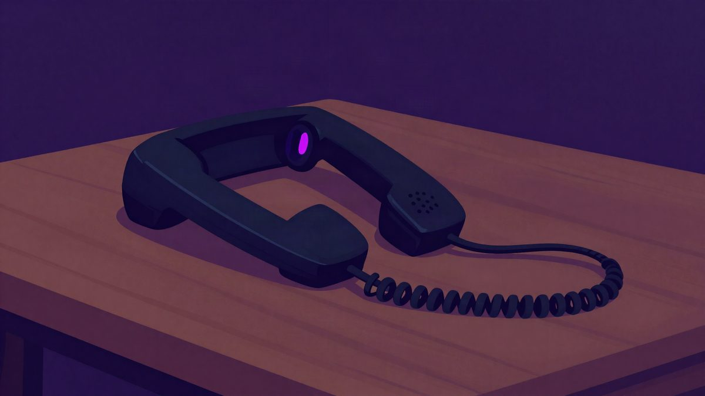
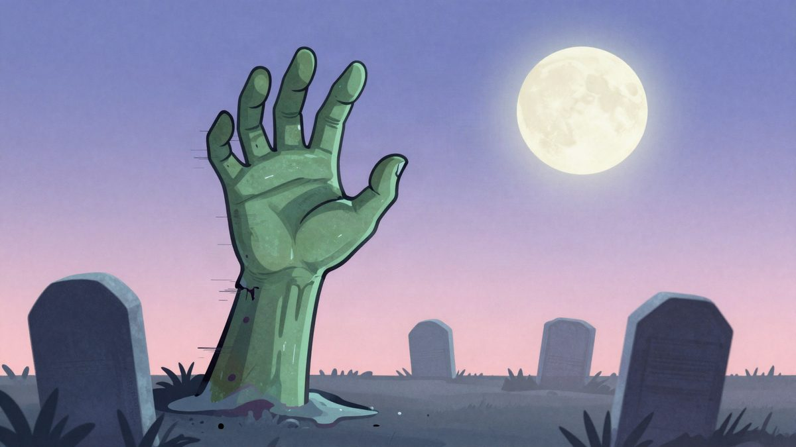

Zašto vas prevaranti žele zadržati na telefonu i kako prepoznati njihove trikove

Prevaranti koji se predstavljaju kao banka ili FBI traže da ne prekidate poziv, jer što dulje razgovarate, lakše stječu povjerenje i pojačavaju pritisak. FBI je u kolovozu 2026. izvijestio o slučaju s lažiranim brojem ureda u Bostonu. Engadget savjetuje da prekinete poziv i nazovete službeni broj s kartice ili izvoda.
Poziv iz "banke" koji upozorava na sumnjiv prijenos novca ima jedan cilj: da ostanete na liniji. Prema Engadgetu, upravo je uputa "ne prekidajte poziv" najvažniji dio prijevare. Što dulje razgovarate, to prevarant lakše stječe povjerenje i pojačava pritisak. Tako vas vodi prema odluci koju inače ne biste donijeli, primjerice da mu odate verifikacijski kod ili uplatite novac.
Prevaranti često ostaju na vezi dok žrtva ulazi u bankarski račun, prebacuje novac, kupuje poklon-kartice ili ide na bankomat podići gotovinu. Neki im čak govore što da kažu zaposlenicima banke ako pitaju o neobičnoj transakciji. Ako vas netko tko navodno štiti vašu ušteđevinu odvraća od razgovora s bilo kim drugim, nešto nije u redu.
Više uloga u istoj prijevari
Scenarij se može proširiti na više osoba. FBI je u kolovozu 2026. izvijestio da su se prevaranti predstavljali kao zaposlenici banke i tvrdili da su podaci žrtve iskorišteni za otvaranje računa za kupnju ilegalnog oružja. Zatim su žrtve prespojili na osobu koja se predstavljala kao FBI-jev agent. Veza je prekinuta kad su žrtve potaknute da provjere broj. Ubrzo je stigao novi poziv s prikazanim brojem FBI-jeva ureda u Bostonu, a taj je broj bio lažiran (spoofing). "Agenti" su tada tražili da se razgovor nastavi preko šifrirane aplikacije za poruke. FBI nije rekao koliko je ljudi bilo na meti.
Prevaranti ne glume samo prijetećeg negativca. Neki zvuče profesionalno, strpljivo i suosjećajno. Ako vas takav glas odvraća od kontaktiranja organizacije ili traženja drugog mišljenja, to je znak za uzbunu.
Kako prepoznati pritisak
Nakon uvodnog razgovora prevaranti često prelaze na zapovjedni ton. Ako pozivatelj traži da ostanete na vezi ili da razgovor zadržite privatnim, prekinite poziv. Isto vrijedi za zahtjev da novac prebacite na "sigurniji" račun i za svaki zahtjev za lozinkom ili jednokratnim verifikacijskim kodom. Caller ID nije pouzdan jer se brojevi mogu lažirati.
Nakon prekida organizaciju nazovite isključivo preko njezine službene aplikacije ili broja s kartice ili izvoda. Ne koristite brojeve koje je dao pozivatelj ni brojeve iz sponzoriranih rezultata pretraživanja. Ako ste već podijelili osjetljive podatke ili prebacili novac, odmah se javite banci ili pružatelju platnih usluga.
Filtriranje poziva na telefonu
Neke neželjene pozive može filtrirati i sam telefon. Na iPhoneu s iOS-om 26 ili novijim opcija je u Settings > Apps > Phone > Screen Unknown Callers. Može utišati nespremljene brojeve ili tražiti da se pozivatelj predstavi prije spajanja. Na podržanim Samsung Galaxy telefonima filtriranje spama nalazi se u Phone > Settings > Caller ID and spam protection. Vlasnici Google Pixela mogu postaviti Call Screen u postavkama aplikacije Phone, na podržanim uređajima u odabranim regijama. Mana je što filtri ponekad zaustave i legitimne pozivatelje.
Engadget navodi i da su Meta, Microsoft i Starlink pomogli ukloniti više od milijun računa povezanih s prijevarama. Sumnjive prijevare u SAD-u moguće je prijaviti agenciji FTC.
Izvor: Engadget
Povezani članci

Glumci Return of the Living Dead zgroženi AI sequelom u kojem su trebali glumiti8. studenoga 2026. Prodao tri iPhonea 18 Pro Max na Xianyuu, zarada oko 300 eura, a banka mu je zamrznula račune7. studenoga 2026.
Prodao tri iPhonea 18 Pro Max na Xianyuu, zarada oko 300 eura, a banka mu je zamrznula račune7. studenoga 2026.- Rakuten Travel hakiran: moguće je curenje podataka do 2,6 milijuna korisnika26. listopada 2026.